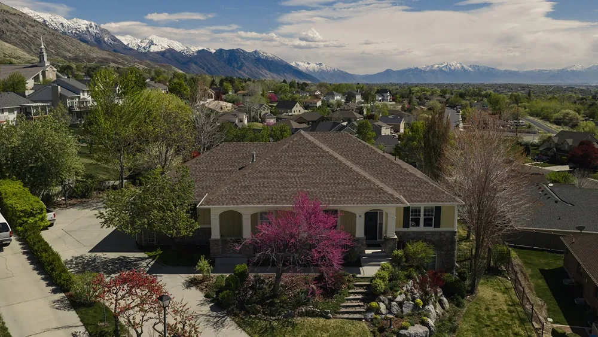

Your roof plays a major role in your home’s appearance, making the material you choose an important design decision as well as a practical one. Designer asphalt roofing gives homeowners a more stylish look while providing the reliable protection of asphalt shingles.
At Aesthetic Roofing, we provide professional designer asphalt roof installation throughout Davis County, Cache County, and Salt Lake County, as well as surrounding Northern Utah communities. We’ll help you explore your options and choose a roofing system that complements your home’s architecture while providing dependable protection.
What Are Designer Asphalt Shingles?
Designer shingles are premium asphalt roofing products created to provide greater visual depth and architectural character than more traditional asphalt shingles. Depending on the product, they may use distinctive shapes, dimensional profiles, or other design details to create a more customized appearance.
These shingles can be particularly appealing for homeowners who view the roof as an important part of their home’s overall exterior design. The added dimension can help create visual interest while complementing architectural details throughout the property.
Designer Shingles vs. Architectural Shingles
Designer shingles and architectural shingles are related, but the terms aren’t always interchangeable. Architectural shingles generally feature a dimensional construction compared with traditional three-tab shingles, while designer products typically represent more premium options with an increased emphasis on distinctive aesthetics.
Homeowners interested in a more traditional option can explore our asphalt roofing services and compare the differences.
Why Choose Premium Asphalt Shingles?
For many homeowners, a roof is more than a functional necessity. It represents a significant portion of the home’s visible exterior and can influence the overall impression the property makes.
Premium asphalt shingles offer several advantages for homeowners looking to elevate their roofing system:
- Enhanced curb appeal: Dimensional profiles create depth and visual interest across the roofline.
- Architectural character: Designer products can help emphasize or complement distinctive elements of your home’s exterior.
- Greater design flexibility: Available styles give homeowners more opportunities to coordinate their roof with siding, masonry, trim, and other exterior finishes.
- Premium appearance: Dimensional shingle roofing can provide an elevated alternative for homeowners who want more than a standard asphalt roof.
- Familiar asphalt construction: Homeowners can achieve a distinctive appearance while choosing a roofing material that’s widely used for residential properties.
Designer asphalt roofing won’t be the right choice for every homeowner. If you’re comparing residential roofing options, we’ll help you weigh appearance, budget, roof design, and long-term priorities before making your decision.
Professional Designer Asphalt Roof Installation
Investing in premium roofing materials makes installation quality especially important. Even the most attractive designer shingles need to be installed correctly as part of a complete roofing system to deliver the performance homeowners expect.
At Aesthetic Roofing, our approach to designer asphalt roof installation goes beyond the visible shingles. We consider how shingles, underlayment, ice and water protection, flashing, and ventilation work together to protect your home.
Ventilation is a particularly important part of our approach. We evaluate both intake and exhaust rather than focusing only on how warm air exits the attic. Proper balance helps support the performance and longevity of the complete roofing system.
Our crews also follow GAF manufacturer specifications and established industry installation standards. Throughout your project, dedicated team members assist with scheduling, product selection, installation coordination, and project management, helping create a predictable experience from beginning to end.
Designer Shingle Repair and Maintenance
Designer asphalt roofing can experience many of the same issues as other asphalt roofing systems. Severe weather, falling debris, aging materials, and other conditions may eventually cause localized damage.
Signs your designer roofing shingles may need professional attention zz:
- Missing, lifted, or loose shingles.
- Cracked or otherwise visibly damaged shingles.
- Excessive granule loss.
- Damage around flashing or roof penetrations.
- Water stains or other signs of moisture intrusion.
- Visible damage following hail or strong winds.
When damage is limited to a specific area, repair may be possible without replacing the entire roof. Our team can evaluate the roofing system and recommend the most appropriate solution based on its actual condition.
Periodic inspections can also help identify concerns before they develop into larger problems. This is valuable after severe Northern Utah weather, when damage may not be obvious from the ground.
Why Choose Aesthetic Roofing for Designer Asphalt Roofing?
When you’re investing in a premium roof replacement, you want the experience and workmanship to reflect the quality of the materials you’ve selected. Aesthetic Roofing is built for homeowners who value craftsmanship, communication, and confidence in the company working on their home.
Homeowners choose us because:
- We’re a GAF Master Elite® contractor. This designation reflects stringent GAF requirements and is held by a small percentage of roofing contractors nationwide.
- We approach your roof as a complete system. Premium shingles are only one component. We pay attention to the underlying protection, flashing, and ventilation that contribute to long-term performance.
- We help with product selection. Our team can guide you through your options so your new roof complements your home’s exterior and fits your priorities.
- We prioritize the customer experience. Clear communication and dedicated support continue throughout the project.
- We’re established in Northern Utah. We have real employees and a physical presence in the area, giving you a local team to contact after installation is complete.
Our goal isn’t simply to install an attractive roof. It’s to provide a premium roofing experience and a finished system you’ll feel confident investing in.
Schedule Designer Asphalt Roofing Services in Northern Utah
If you’re ready to give your home a more distinctive roofline, Aesthetic Roofing can help you explore designer shingles and find an option that complements your property.
We provide designer asphalt roofing throughout Davis County, Cache County, Salt Lake County, and surrounding Northern Utah communities. Homeowners considering a different aesthetic can also explore metal roofing, while homes with low-slope sections may require specialized flat roofing.
Contact Aesthetic Roofing today to discuss your roofing project and learn more about premium asphalt shingles for your home.
Get your next project started Our process Our team applies system-specific solutions that align with manufacturer standards and industry best practices. Our team applies system-specific solutions that align with manufacturer standards and industry best practices.
Frequently Asked Questions About Designer Asphalt Roofing
What Is the Difference Between Designer and Standard Asphalt Shingles?
Designer shingles place greater emphasis on premium appearance, dimensional character, and distinctive profiles. Standard asphalt shingles can still provide attractive, reliable roofing, but designer products give homeowners additional options when the roof’s visual impact is a priority.
Are Designer Shingles the Same as Architectural Shingles?
Not necessarily. Architectural shingles generally refer to dimensional asphalt shingles constructed to provide more depth than traditional three-tab products. Designer shingles are typically premium products that place an even greater emphasis on distinctive profiles and aesthetics.
Are Premium Asphalt Shingles Worth the Investment?
That depends on your priorities. Premium asphalt shingles may be worth considering if curb appeal, architectural character, and a more distinctive roof are important to you. Your budget and long-term plans for the home should also factor into the decision.
How Long Do Designer Asphalt Shingles Last?
Designer asphalt shingles may last 20 to 30 years or more. The service life of designer shingles depends on the specific product, installation quality, ventilation, weather exposure, and maintenance. Rather than relying on a universal lifespan, homeowners should consider the specifications and limited warranty of the particular product they select.
Can Designer Shingles Be Repaired?
Yes. If only a few designer shingles are damaged, they can often be repaired or replaced without replacing the entire roof. The best option depends on the extent of the damage and whether matching shingles are available.
How Do I Choose a Designer Shingle Style for My Home?
Consider your home’s architecture, siding, masonry, trim, and overall exterior color palette. Aesthetic Roofing can help you compare available products and choose a style that complements the property rather than competing with its existing design.
Are Designer Asphalt Shingles Suitable for Northern Utah Weather?
Designer asphalt shingles can be an option for Northern Utah homes when an appropriate product is selected and installed correctly. The complete roofing system, including underlayment, flashing, ice and water protection, and ventilation, also plays an important role in performance.
What Should I Look for in a Designer Asphalt Roofing Contractor?
Look for a contractor with strong installation standards, manufacturer credentials, clear communication, and experience installing complete roofing systems. For a premium material, it’s also valuable to work with a contractor who can guide product selection and understands how the roof contributes to the home’s overall appearance.